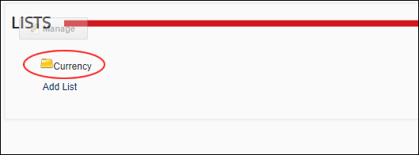

Editing a List Entry
How to edit a list entry using the Admin Lists module. In the below example only one of the list entries can be edited because the Currency list is maintained by SuperUsers using the Host List module.
- Navigate to Admin > Advanced Settings >
 Lists.
Lists.
- In the Lists section, select the title of the required list to view the list details.

- Click the
 Edit button beside the list entry to be edited.
Edit button beside the list entry to be edited.

- Edit the entry details as required.
- Optional. Click either the Move Entry Up
 or Move Entry Down
or Move Entry Down  button repeatedly to change the position of the entry in the list.
button repeatedly to change the position of the entry in the list.
- Click the Save link.